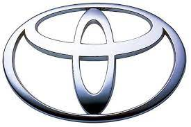
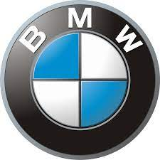

Ford
Up
Brand history
Ford Motor Company была основана Генри Фордом в 1903 году в Детройте, штат Мичиган. Производитель быстро стал известен благодаря своему пионерскому подходу к автомобильной индустрии. В 1908 году Ford выпустил Model T, первый массовый автомобиль, который стал широко доступен благодаря инновационным методам производства.
Brief description of the modelBrief description of the model
Ford Mustang - это легендарный спортивный автомобиль, впервые представленный в 1964 году. Этот автомобиль стал символом мощности, стиля и свободы на дороге. Mustang имеет характерный дизайн с длинным капотом и коротким задним свесом.
Ford F-150 - это одна из наиболее популярных серий грузовиков в Северной Америке. Впервые представленный в 1948 году, F-150 выделяется своей надежностью, мощностью и внушительной грузоподъемностью.
Comments about these models
Ford Mustang:
Положительные аспекты: Покупатели часто выделяют стильный дизайн, высокую производительность и замечательное управление автомобилем. Mustang оценивается за спортивные характеристики и иконическое наследие.
Отрицательные аспекты: Некоторые отзывы указывают на ограниченное пространство задних сидений и довольно жесткую подвеску, что может сделать поездки на неровных дорогах менее комфортными.
Ford F-150:
Положительные аспекты: Владельцы Ford F-150 высоко оценивают его грузоподъемность, надежность и вариативность, особенно в контексте использования для работы и перевозки грузов. Также отмечается комфорт интерьера и доступность передовых технологических функций.
Отрицательные аспекты: Некоторые покупатели могут указывать на более высокий расход топлива по сравнению с более компактными автомобилями и ограниченную маневренность в городском движении.

Toyota
Up
Brand history
Toyota Motor Corporation начала свой путь как часть корпорации Toyoda Automatic Loom Works в 1937 году. Основанный Кирио Тойодой, бренд в первую очередь занимался производством легковых автомобилей и грузовиков. В конце 1930-х годов был выпущен первый легковой автомобиль, Toyota AA, а в начале 1940-х годов компания участвовала в производстве грузовиков для японской армии во время Второй мировой войны.
Brief description of the modelBrief description of the model
Toyota Camry является седаном среднего класса, который славится своей надежностью и комфортом. С 1982 года Camry прошла через множество изменений и обновлений. Стильный дизайн, экономичные двигатели, просторный салон и обширный набор технологических опций делают Camry популярным среди широкого круга водителей
Toyota RAV4 представляет собой компактный кроссовер, который заслужил репутацию надежного и универсального автомобиля. С момента своего дебюта в 1994 году RAV4 стал одним из пионеров в сегменте кроссоверов.
Comments about these models
Toyota Camry:
Положительные отзывы: Владельцы Toyota Camry часто выделяют комфортный и просторный салон, высокую экономичность топлива, надежность и хорошие оценки по безопасности. Также отмечаются современные технологические возможности, включая инфотейнмент и системы безопасности.
Отрицательные отзывы: Некоторые покупатели могут указывать на ограниченный выбор моторов или более консервативный дизайн по сравнению с некоторыми конкурентами.
Toyota RAV4:
Положительные отзывы: Владельцы Toyota RAV4 высоко оценивают его внешний вид, проходимость, экономичность и надежность. Многие отмечают удобство салона, большое количество пространства для пассажиров и багажа. Также RAV4 получает положительные отзывы за современные функции безопасности и технологические возможности.
Отрицательные отзывы: Некоторые покупатели могут упоминать о некоторой шумности салона на высоких скоростях или на дорогах с плохим покрытием. Также некоторые могут желать больше мощности, особенно при полной загрузке.

BMW
Up
Brand history
Бренд BMW начал свой путь в 1916 году в Мюнхене, Германия. Основатели компании - Густав Отто и Карл Рапп, изначально ориентировались на производство авиационных двигателей. В 1917 году компания была переименована в Bayerische Motoren Werke AG (Баварская моторная фабрика).
Brief description of the modelBrief description of the model
BMW 3 Series - это компактный седан или универсал, который стал одним из самых успешных и значимых автомобилей в портфеле BMW. Представлен в 1975 году, 3 Series славится своим динамичным характером, спортивной производительностью и роскошным дизайном.
BMW X5 - это представитель линейки Sports Activity Vehicle (SAV) от BMW, представленный в 1999 году. X5 сочетает в себе элегантный дизайн с выдающейся производительностью и возможностью преодолевать различные типы местности.
Comments about these models
BMW 3 Series:
Положительные комментарии: Владельцы часто высоко оценивают динамичное управление и спортивные характеристики 3 Series. Также отмечают стильный дизайн, качественный интерьер и широкий выбор технологических возможностей.
Отрицательные комментарии: Некоторые могут упоминать о более жесткой подвеске в некоторых конфигурациях, что может считаться менее комфортным для ежедневного использования.
BMW X5:
Положительные комментарии: Владельцы X5 высоко ценят выдающуюся производительность, комфорт вождения и роскошный интерьер. Возможности преодоления бездорожья и просторный багажник делают X5 привлекательным выбором для тех, кто ценит семейные поездки и активный образ жизни.
Отрицательные комментарии: Некоторые могут отмечать относительно высокий расход топлива у более мощных версий, а также более крупные размеры, что может быть проблематично в условиях ограниченных парковочных мест.